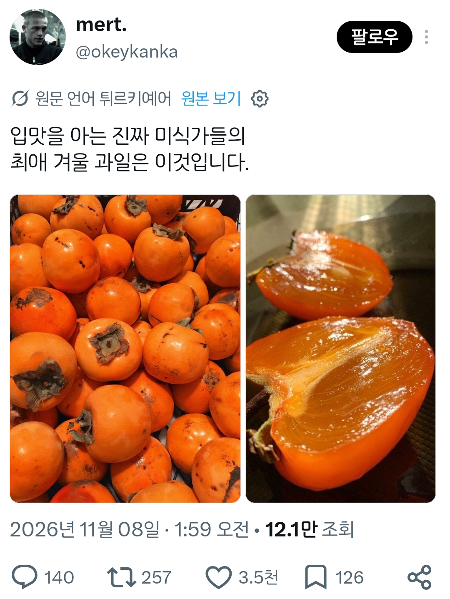
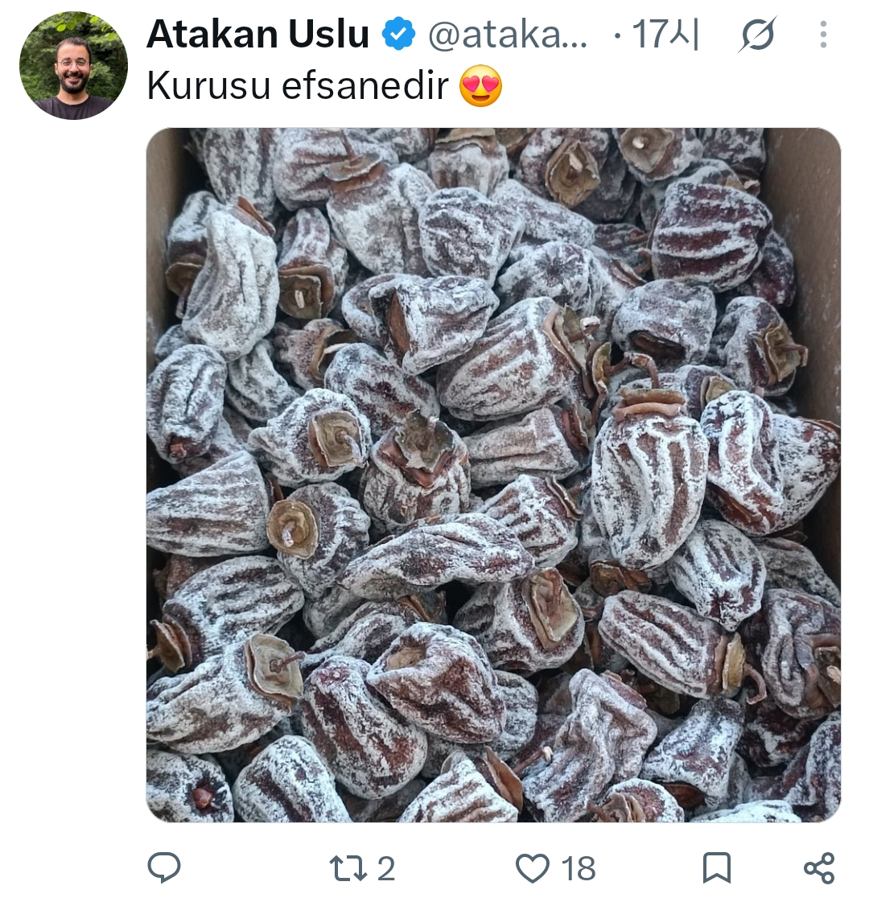

감
터키에서도 곶감을 먹는구나


감
터키에서도 곶감을 먹는구나
아.. 낼 홍시 사러가야겠다 홍시 다 조져ㅋ
홍시도 조코, 연시도 조코, 곶감은 좀 너무 달어.
홍시의 계절이 돌아왔구나
변비제조기임 체질이 그런가
감먹으면 변비생김 ㅠ
원래 그런 성분이 있다더라
그래서 설사폭포장염에 좋은 음식중 하나임
그럼 밸런스를 위해 자두 복숭아 ㄱㄱ
배아픈데 나오지는 않게되는거 아님?
물 마셔 물 ㅋ
감이 좀 그런게 있댜
그래서 홍시도 가운데에 허연거 빼고 먹으라던데
푸룬 ㄱㄱ
게장이랑 같이 먹으면 좋아
헉
하얀부분 안먹으면 덜할텐데
저 투명한 상태가 졷사기임
감아마 페르시언? 이쪽이 원조인가 그런격아님?
인줄알앗는데 동아시아가 근본이래네
감 영문명이 persimmon이길래 페르시아쪽인 줄 알았는데
유럽에선 카키라고 부르는데 일본어에서 온거임
생각이 난다 홍시가 열리면
울엄마가 생각이 난다 생각나
2015년경 한 농부가 한국이나 일본 등에서 감을 말려 보관하는 방식을 접한 뒤, 독자적인 연구 끝에 튀르키예에서 곶감 제조를 시작했습니다. 이후 현지 농가로 퍼지며 데니즐리(Denizli) 평원 등이 주요 산지로 알려져 있습니다.
헐 10년밖에 안됐네
ㅈ밥새끼들
ㅋㅋㅋㅋㅋㅋㅋㅋㅋ 갑자기 욕이야 ㅠㅠ ㅋㅋㅋㅋㅋ
ㅋㅋㅋㅋ왜 급발진
아님 터키도 원래 예전부터 감을 말려먹었음 한국에서 배워간적이 있긴한데 그전부터도 말려먹어서 곶감을 배워간건 아님
난 홍시는 그다지. 단단한 단감이 좋음
그런 당신을 위해 몰래 숨겨둔 떫은감!
살짝 물렁해지는 단감이 리얼 맛있는데
신은 갑진년부터 어쩌고 저쩌고
단거 좋아하는애들이라 환장할듯
홍시는 좋은데 곶감은 노인네 부랄같아서 와랄랄라라
곶감먹고싶네
돌궐족도 그야 호랑이는 무서웠을 테니까
으흐 연시맛잇으
단감이랑 곶감이 맛있지
홍시 연시 이런건 먹기가 너무 힘들어...
난 감은 안맞더라 난 신 과일이 좋아 상큼달달 귤류
감농사가 좃밥이라매 맞냐
어떻게 조져서 키워놔도 홍시로 만들면 맛이 평상타는 친다고 하던디
어릴때 할머니댁에서 잘라때 감에 뭐 약을 치고 뭐고 그딴거 본적이 없음
산에 가서 나무 뭐 어쩌고 그런것도 없음 클때되면 알아서 열려있음
그거 홍시만들면 끝임ㅋㅋ
근데 그건있음
말벌들 ㅈㄴ꼬임
할아버지댁이 완전시골에 마당에 감나무가있었는데
감따먹고 남은거 대롱대롱 달려있으면 가을즈음에 말벌들이 감 ㅈㄴ파먹음
달아서그런가
ㅈ밥인 농사는 없어용
스페인이 의외로 감을 많이 먹더라
그.. 게와 함께..
감 무섭다는 것은 화장실에서 양손으로 똥구멍 벌리고 하느님 찾아봐야 알게 됨.
곶감 떙기네
홍시 ㅈㄴ 마이쩡